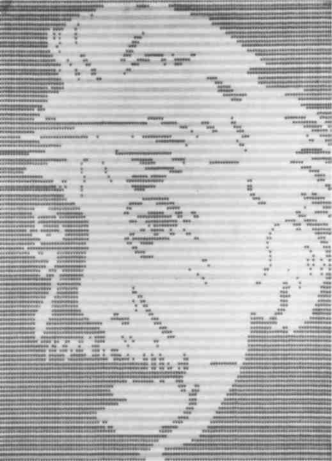

Strata, stratification
The strata are phenomena of thickening on the Body of the earth, simultaneously molecular and molar: accumulations, coagulations, sedimentations, foldings. They are Belts, Pincers, or Articulations. Summarily and traditionally, we distinguish three major strata: physicochemical, organic, and anthropomorphic (or “alloplastic”). Each stratum, or articulation, consists of coded milieus and formed substances. Forms and substances, codes and milieus are not really distinct. They are the abstract components of every articulation.
A stratum obviously presents very diverse forms and substances, a variety of codes and milieus. It thus possesses both different formal Types of organization and different substantial Modes of development, which divide it into parastrata and epistrata, for example, the divisions of the organic stratum. The epistrata and parastrata subdividing a stratum can be considered strata themselves (so that the list is never exhaustive). A given stratum retains a unity of composition in spite of the diversity in its organization and development. The unity of composition relates to formal traits common to all of the forms or codes of a stratum, and to substantial elements, materials common to all of the stratum’s substances or milieus.
The strata are extremely mobile. One stratum is always capable of serving as the substratum of another, or of colliding with another, independently of any evolutionary order. Above all, between two strata or between two stratic divisions, there are inter-stratic phenomena: transcodings and passages between milieus, intermixings. Rhythms pertain to these interstratic movements, which are also acts of stratification. Stratification is like the creation of the world from chaos, a continual, renewed creation. And the strata constitute the Judgment of God. Classical artists are like God, they make the world by organizing forms and substances, codes and milieus, and rhythms.
Articulation, which is constitutive of a stratum, is always a double articulation (double pincer). What is articulated is a content and an expression. Whereas form and substance are not really distinct, content and expression are. Hjelmslev’s net is applicable to the strata: articulation of content and articulation of expression, with content and expression each possessing its own form and substance. Between them, between content and expression, there is neither a correspondence nor a cause-effect relation nor a signified-signifier relation: there is real distinction, reciprocal presupposition, and only isomorphy. But content and expression are not distinguished from each other in the same fashion on each stratum: the distribution of content and expression is not the same on the three major strata (there is, for example, a “linearization” of expression on the organic stratum, and a “superlinearity” of the anthropomorphic strata). That is why the molar and the molecular have very different combinations depending on the stratum considered.
What movement, what impulse, sweeps us outside the strata and (metastrata)”] Of course, there is no reason to think that all matter is confined to the physicochemical strata: there exists a submolecular, unformed Matter. Similarly, not all Life is confined to the organic strata: rather, the organism is that which life sets against itself in order to limit itself, and there is a life all the more intense, all the more powerful for being anorganic. There are also nonhuman Becomings of human beings that overspill the anthropomorphic strata in all directions. But how can we reach this “plane,” or rather how can we construct it, and how can we draw the “line” leading us there? For outside the strata or in the absence of strata we no longer have forms or sub stances, organization or development, content or expression. We are disarticulated; we no longer even seem to be sustained by rhythms. How could unformed matter, anorganic life, nonhuman becoming be anything but chaos pure and simple? Every undertaking of destratification (for example, going beyond the organism, plunging into a becoming) must therefore observe concrete rules of extreme caution: a too-sudden destratification may be suicidal, or turn cancerous. In other words, it will sometimes end in chaos, the void and destruction, and sometimes lock us back into the strata, which become more rigid still, losing their degrees of diversity, differentiation, and mobility.
A
Assemblages
Assemblages are already different from strata. They are produced in 11 the strata, but operate in zones where milieus become decoded: they begin by extracting a territory from the milieus. Every assemblage is basically territorial. The first concrete rule for assemblages is to discover what territoriality they envelop, for there always is one: in their trash can or on their bench, Beckett’s characters stake out a territory. Discover the territorial assemblages of someone, human or animal: “home.” The territory is made of decoded fragments of all kinds, which are borrowed from the milieus but then assume the value of “properties”: even rhythms take on a new meaning (refrains). The territory makes the assemblage. The territory is more than the organism and the milieu, and the relation between the two; that is why the assemblage goes beyond mere “behavior” (hence the importance of the relative distinction between territorial animals and milieu animals).
Inasmuch as they are territorial, assemblages still belong to the strata. At least they pertain to them in one of their aspects, and it is under this aspect that we distinguish in every assemblage content 4 from expression. It is necessary to ascertain the content and the expression of each assemblage, to evaluate their real distinction, their reciprocal presupposition, their piecemeal insertions. The reason that the assemblage is not confined to the strata is that expression in it becomes a semiotic system, a regime of signs, and content becomes a pragmatic system, actions and passions. This is the double articulation face-hand, gesture-word, and the reciprocal presupposition between the two. This is the first division of every assemblage: it is simultaneously and inseparably a machinic assemblage and an assemblage of enunciation. In each case, it is necessary to ascertain both what is said and what is done. There is a new relation between content and expression that was not yet present in the strata: the statements or expressions express incorporeal transformations that are “attributed” as such (properties) to bodies or contents. In the strata, expressions do not form signs, nor contents pragmata, so this autonomous zone of incorporeal transformations expressed by the former and attributed to the latter does not appear. Of course, regimes of signs develop only in the alloplastic or anthropomorphic strata (including territorialized animals). But this does not mean that they do not permeate all of the strata, and overspill each of them. Assemblages belong to the strata to the extent that the distinction between content and expression still holds for them. We may also think of regimes of signs and pragmatic systems as strata in their own right, in the broad sense previously mentioned. But because the content-expression distinction assumes a new figure, we are already in a different element than that of the strata in the narrow sense.
The assemblage is also divided along another axis. Its territoriality (content and expression included) is only a first aspect; the other aspect is constituted by lines of deterritorialization that cut across it and carry it away. These lines are very diverse: some open the territorial assemblage onto other assemblages (for example, the territorial refrain of the animal becomes a courtship or group refrain). Others operate directly upon the territoriality of the assemblage, and open it onto a land that is eccentric, immemorial, or yet to come (for example, the game of territory and the earth in the lied, or in the romantic 11 artist in general). Still others open assemblages onto abstract and cosmic machines that they effectuate. The territoriality of the assemblage originates in a certain decoding of milieus, and is just as necessarily extended by lines of deterritorialization. The territory is just as inseparable from deterritorialization as the code from decoding. Following these lines, the assemblage no longer presents an expression distinct from content, only unformed matters, destratified forces, and functions. The concrete rules of assemblage thus operate along these two axes: On the one hand, what is the territoriality of the assemblage, what is the regime of signs and the pragmatic system? On the other hand, what are the cutting edges of deterritorialization, and what abstract machines do they effectuate? The assemblage is tetravalent: (1) content and expression; (2) territoriality and deterritorialization. That is why there were four aspects in the privileged example of Kafka’s assemblages.
R
Rhizome
Not only strata, assemblages are complexes of lines. We can identify a first state of the line, or a first kind of line: the line is subordinated to the point; the diagonal is subordinated to the horizontal and vertical; the line forms a contour, whether figurative or not; the space it constitutes is one of striation; the countable multiplicity it constitutes remains subordinated to the One in an always superior or supplementary dimension. Lines of this type are molar, and form a segmentary,
circular, binary, arborescent system.
The second kind is very different, molecular and of the “rhizome” type. The diagonal frees itself, breaks or twists. The line no longer forms a contour, and instead passes between things, between points. It belongs to a smooth space. It draws a plane that has no more dimensions than that which crosses it; therefore the multiplicity it constitutes is no longer subordinated to the One, but takes on a consistency 2 of its own. These are multiplicities of masses or packs, not of classes; 10anomalous and nomadic multiplicities, not normal or legal ones; 12 multiplicities of becoming, or transformational multiplicities, not countable elements and ordered relations; fuzzy, not exact aggregates, etc. At the level of pathos, these multiplicities are expressed by psychosis and especially schizophrenia. At the level of pragmatics, they are utilized by sorcery. At the level of theory, the status of multiplicities is correlative to that of spaces, and vice versa: smooth spaces of the type desert, steppe, or sea are not without people; they are not depopulated but rather are populated by multiplicities of this second kind (mathematics and music have gone quite far in the elaboration of this theory of multiplicities).
It is not enough, however, to replace the opposition between the One and the multiple with a distinction between types of multiplicities. For the distinction between the two types does not preclude their immanence to each other, each “issuing” from the other after its fashion. It is not so much that some multiplicities are arborescent and others not, but that there is an arborification of multiplicities. That is what happens when the black holes scattered along a rhizome begin to resonate together, or when the stems form segments that striate space in all directions, rendering it comparable, divisible, homogeneous (as we saw in particular in the case of the Face). That is also what happens when “mass” movements or molecular flows conjugate at points of accumulation or stoppage that segment and rectify them. But conversely, and without symmetry, the stems of the rhizome are always taking leave of the trees, the masses and flows are constantly escaping, inventing connections that jump from tree to tree and uproot them: a whole smoothing of space, which in turn reacts back upon striated space. Even, and especially, territories are perturbed by these deep movements. Or language: the trees of language are shaken by buddings and rhizomes. So that rhizome lines oscillate between tree lines that segment and even stratify them, and lines of flight or and rupture that carry them away.
We are therefore made of three lines, but each kind of line has its dangers. Not only the segmented lines that cleave us, and impose upon us the striations of a homogeneous space, but also the molecular lines, already ferrying their micro-black holes, and finally the lines of flight themselves, which always risk abandoning their creative poten tialities and turning into a line of death, being turned into a line of destruction pure and simple (fascism).
C
Plane of Consistency, Body without Organs
The plane of consistency or of composition (planomenon) is opposed to the plane of organization and development. Organization and development concern form and substance: at once the development of form and the formation of substance or a subject. But the plane of consistency knows nothing of substance and form: haecceities, which are inscribed on this plane, are precisely modes of individuation proceeding neither by form nor by the subject. The plane consists abstractly, but really, in relations of speed and slowness between unformed elements, and in compositions of corresponding intensive affects (the “longitude” and “latitude” of the plane). In another sense, consistency concretely ties together heterogeneous, disparate elements as such: it assures the consolidation of fuzzy aggregates, in other words, multiplicities of the rhizome type. In effect, consistency, proceeding by consolidation, acts necessarily in the middle, by the middle, and stands opposed to all planes of principle or finality. Spinoza, Holderlin, Kleist, Nietzsche are the surveyors of such a plane of consistency. Never unifications, never totalizations, but rather consistencies or consolidations.
Inscribed on the plane of consistency are haecceities, events, incorporeal transformations that are apprehended in themselves; nomadic essences, vague yet rigorous; continuums of intensities or continuous variations, which go beyond constants and variables; becomings, which have neither culmination nor subject, but draw one another into zones of proximity or undecidability; smooth spaces, composed from within striated space. We will say that a body without organs, or bodies without organs (plateaus) comes into play in individuation by and haecceity, in the production of intensities beginning at a degree zero, 10 in the matter of variation, in the medium of becoming or transformation, and in the smoothing of space. A powerful nonorganic life that escapes the strata, cuts across assemblages, and draws an abstract line without contour, a line of nomad art and itinerant metallurgy.
Does the plane of consistency constitute the body without organs, or does the body without organs compose the plane? Are the Body without Organs and the Plane the same thing? In any event, composer and composed have the same power: the line does not have a dimension superior to that of the point, nor the surface to that of the line, nor the volume to that of the surface, but always an anexact, fractional number of dimensions that constantly increase or decrease with the number of its parts. The plane sections multiplicities of variable dimensions. The question is, therefore, the mode of connection between the different parts of the plane: To what extent do the bodies without organs interconnect? How are the continuums of intensity extended? What is the order of the transformational series? What are these alogical linkages always effected in the middle, through which the plane is constructed piece by piece in ascending or descending fractional order? The plane is like a row of doors. And the concrete rules for the construction of the plane obtain to the extent that they exercise a selective role. It is the plane, in other words, the mode of connection, that provides the means of eliminating the empty and cancerous bodies that rival the body without organs, of rejecting the homogeneous surfaces that overlay smooth space, and neutralizing the lines of death and destruction that divert the line of flight. What is retained and preserved, therefore created, what consists, is only that which increases the number of connections at each level of division or composition, thus in descending as well as ascending order (that which is cannot be divided without changing in nature, or enter into a larger composition without requiring a new criterion of comparison…).
D
Deterritorialization
The function of deterritorialization: D is the movement by which 5 “one” leaves the territory. It is the operation of the line of flight. There are very different cases. D may be overlaid by a compensatory reterritorialization obstructing the line of flight: D is then said to be negative. Anything can serve as a reterritorialization, in other words, “stand for” the lost territory; one can reterritorialize on a being, an object, a book, an apparatus or system… For example, it is inaccurate to say that the State apparatus is territorial: it in fact performs a D, but one immediately overlaid by reterritorializations on property, work, and money (clearly, that landowner ship, public or private, is not territorial but reterritorializing). Among regimes of signs, the signifying regime certainly attains a high level of D; but because it simultaneously sets up a whole system of reterritorializations on the signified, and on the signifier itself, it blocks the line of flight, allowing only a negative D to persist. Another case is when D becomes positive — in other words, when it prevails over the reterritorializations, which play only a secondary role — but nevertheless remains relative because the line of flight it draws is segmented, is divided into successive “proceedings,” sinks into black holes, or even ends up in a generalized black hole (catastrophe). This is the case of the regime of subjective signs, with its passional and consciousness-related D, which is positive but only in a relative sense. It will be noted immediately that these two major forms of D are not in a simple evolutionary relation to each other: the second may break away from the first, or it may lead into it (notably when the segmentations of converging lines of flight bring an overall reterritorialization or one benefiting a particular segment, thus arresting the movement of escape). There are all kinds of mixed figures, assuming highly varied forms of D.
Is there absolute D, and what does “absolute” mean? We must first have a better understanding of the relations between D, the territory, reterritorialization, and the earth. To begin with, the territory itself is inseparable from vectors of deterritorialization working it from within: either because the territoriality is supple and and “marginal,” in other words, itinerant, or because the territorial assemblage itself opens onto and is carried off by other types of 11 assemblages. Second, D is in turn inseparable from correlative reterritorializations. D is never simple, but always multiple and composite: not only because it participates in various forms at the same time, but also because it converges distinct speeds and movements on the basis of which one may assign at a given moment a “deterritorialized element” and a “deterritorializing element.” Now, reterritorialization as an original operation does not express a return to the territory, but rather these differential relations internal to D itself, this multiplicity internal to the line of flight (cf. “Theorems of D”). Finally, the earth is not at all the opposite of D: This can already be seen in the mystery of the “natal,” in which the earth as ardent, eccentric, or intense focal point is outside the territory and exists only in the movement of D. More than that, the earth, the glacial, is Deterritorialization par excellence: that is why it belongs to the Cosmos, and presents itself as the material through which human beings tap cosmic forces. We could say that the earth, as deterritorialized, is itself the strict correlate of D. To the point that D can be called the creator of the earth — of a new land, a universe, not just a reterritorialization.
This is the meaning of “absolute.” The absolute expresses nothing transcendent or undifferentiated. It does not even express a quantity that would exceed all given (relative) quantities. It expresses only a type of movement qualitatively different from relative movement. A movement is absolute when, whatever its quantity and speed, it relates “a” body considered as multiple to a smooth space that it and occupies in the manner of a vortex. A movement is relative, whatever its quantity and speed, when it relates a body considered as One to a striated space through which it moves, and which it measures with straight lines, if only virtual. D is negative or relative (yet already effective) when it conforms to the second case and operates either by principal reterritorializations that obstruct the lines of flight, or by secondary reterritorializations that segment and work to curtail them. D is absolute when it conforms to the first case and brings about the creation of a new earth, in other words, when it connects lines of flight, raises them to the power of an abstract vital line, or draws a plane of consistency. Now what complicates everything is that this absolute D necessarily proceeds by way of relative D, precisely because it is not transcendent. Conversely, relative or negative D itself requires an absolute for its operation: it makes the absolute something “encompassing,” something totalizing that overcodes the earth and then conjugates lines of flight in order to stop them, destroy them — rather than connecting them in order to create (it is in this sense that we have opposed conjunction to connection, although we have often treated them as synonyms from a very general point of view). Thus there is a limitative absolute already at work in properly negative, or even relative, D’s. Above all, at this turning point the and lines of flight are not only obstructed or segmented but turn into lines 14 of destruction or death. For the stakes here are indeed the negative and the positive in the absolute: the earth girded, encompassed, overcoded, conjugated as the object of a mortuary and suicidal organization surrounding it on all sides, or the earth consolidated, connected with the Cosmos, brought into the Cosmos following lines of creation that cut across it as so many becomings (Nietzsche’s expression: Let the earth become lightness …). There are thus at least four forms of D that confront and combine, and must be distinguished from one another following concrete rules.
M
Abstract Machines (Diagram and Phylum)
There is no abstract machine, or machines, in the sense of a Platonic Idea, transcendent, universal, eternal. Abstract machines operate within concrete assemblages: They are defined by the fourth aspect of assemblages, in other words, the cutting edges of decoding and 11 deterritorialization. They draw these cutting edges. Therefore they make the territorial assemblage open onto something else, assemblages of another type, the molecular, the cosmic; they constitute becomings. Thus they are always singular and immanent. Contrary to the strata, and the assemblages considered under their other aspects, abstract machines know nothing of forms and substances. This is what makes them abstract, and also defines the concept of the machine in the strict sense. They surpass any kind of mechanics. They are opposed to the abstract in the ordinary sense. Abstract machines consist of unformed matters and nonformal functions. Every abstract machine is a consolidated aggregate of matters-5 functions (phylum and diagram). This is evident on a technological “plane”: such a plane is not made up simply of formed substances (aluminum, plastic, electric wire, etc.) or organizing forms (program, prototypes, etc.), but of a composite of unformed matters exhibiting only degrees of intensity (resistance, conductivity, heating, stretching, speed or delay, induction, transduction… ) and diagrammatic functions exhibiting only differential equations or, more generally, “tensors.” Of course, within the dimensions of the assemblage, the abstract machine, or machines, is effectuated in forms and substances, in varying states of freedom. But the abstract machine must first have composed itself, and have simultaneously composed a plane of consistency. Abstract, singular, and creative, here and now, real yet nonconcrete, actual yet noneffectuated — that is why abstract machines are dated and named (the Einstein abstract machine, the Webern abstract machine, but also the Galileo, the Bach, or the Beethoven, etc.). Not that they refer to people or to effectuating moments; on the contrary, it is the names and dates that refer to the singularities of the machines, and to what they effectuate.
But if abstract machines know nothing of form and substance, what happens to the other determination of strata, or even of assemblages — content and expression? In a certain sense, it could be said that this distinction is also irrelevant to the abstract machine,
precisely because it no longer has the forms and substances the distinction requires. The plane of consistency is a plane of continuous variation; each abstract machine can be considered a “plateau” of variation that places variables of content and expression in continuity. Content and expression thus attain their highest level of relativity, becoming “functives of one and the same function” or materials of a single matter [see 4, “November 20, 1923: Postulates of Linguistics,” note 21 — Trans.]. But in another sense, it could be said that the distinction subsists, and is even recreated, on the level oi traits: there and are traits of content (unformed matters or intensities) and traits of expression (nonformal functions or tensors). Here, the distinction has become entirely displaced, or even a different distinction, since it now concerns cutting edges of deterritorialization. Absolute deterritorialization implies a “deterritorializing element” and a “deterritorialized element,” one of which in each case is allocated to expression, the other to content, or vice versa, but always in such a way as to convey a relative distinction between the two. Thus both content and expression are necessarily affected by continuous variation, but it still assigns them two dissymmetrical roles as elements of a single becoming, or as quanta of a single flow. That is why it is impossible to define a continuous variation that would not take in both the content and the expression, rendering them indiscernible, while simultaneously proceeding by one or the other, determining the two mobile and relative poles of that which has become indiscernible. For this reason, one must define both traits or intensities of content and traits or tensors of expression (indefinite article, proper name, infinitive, and date), which take turns leading one another across the plane of consistency. Unformed matter, the phylum, is not dead, brute, homogeneous matter, but a matter-movement bearing singularities or haecceities, qualities, and even operations (itinerant technological lineages); and the nonformal function, the diagram, is not an inexpressive metalanguage lacking a syntax, but an expressivity-movement always bearing a foreign tongue within each language and 4 nonlinguistic categories within language as a whole (nomad poetic lineages). One writes, then, on the same level as the real of an unformed matter, at the same time as that matter traverses and extends all of nonformal language: a becoming-animal like Kafka’s mouse [p. 243], Hofmannsthal’s rats [p. 240], Moritz’s calves [p. 240]? A revolutionary machine, all the more abstract for being real. A regime that no longer operates by the signifier or the subjective.
That covers singular and immanent abstract machines. What we have said does not preclude the possibility of “the” abstract machine serving as a transcendent model, under very particular conditions. This time the concrete assemblages are related to an abstract idea of the Machine and, depending on how they effectuate it, are assigned coefficients taking into account their potentialities, their creativity. The coefficients that “quantify” assemblages bear on the varying assemblage components (territory, deterritorialization, reterritori-alization, earth, Cosmos), the various entangled lines constituting the “map” of an assemblage (molar lines, molecular lines, lines of flight), and the different relations-between the assemblage and the plane of consistency (phylum and diagram). For example, the “grass stem” component may have different coefficients in assemblages of animal species that are nevertheless closely related [p. 324-25]. As a general rule, an assemblage is all the closer to the abstract machine the more lines without contour passing between things it has, and the 4 more it enjoys a power of metamorphosis (transformation and trans-and substantiation) corresponding to the matter-function: cf. The Waves 10 machine [p. 252].
We have considered in particular two great alloplastic and anthropomorphic assemblages, the war machine and the State apparatus. These two assemblages not only differ in nature but are quantifiable in relation to “the” abstract machine in different ways. They do not have the same relation to the phylum, the diagram; they do not have the same lines, or the same components. This analysis of the two assemblages and their coefficients demonstrates that the war machine does not in itself have war for its object, but necessarily adopts it 13 as its object when it allows itself to be appropriated by the State apparatus. At this very precise point, the line of flight and the abstract vital line it effectuates turn into a line of death and destruction. Hence the name war “machine,” which is much closer to the abstract machine than is the State apparatus, which divests the war machine of its power of metamorphosis. Writing and music can be war machines. The more an assemblage opens and multiplies connections and draws a plane of consistency with its quantifiers of intensities and of consolidation, the closer it is to the living abstract machine. But it strays 5, 9 from it to the extent that it replaces creative connections with conjunctions causing blockages (axiomatics), organizations forming and strata (stratometers), reterritorializations forming black holes (segmentometers), and conversions into lines of death (deleometers). Thus there is a whole process of selection of assemblages according to their ability to draw a plane of consistency with an increasing number of connections. Schizoanalysis is not only a qualitative analysis of abstract machines in relation to the assemblages, but also a quantita tive analysis of the assemblages in relation to a presumably pure abstract machine.
There is one last point of view, that of typological analysis. For there exist general types of abstract machines. The abstract machine or machines of the plane of consistency do not exhaust or dominate the entirety of the operations that constitute the strata and even the assemblages. The strata “take” on the plane of consistency itself, forming areas of thickening, coagulations, and belts organized and developing along the axes of another plane (substance-form, content-3 expression). This means that each stratum has a unity of consistency or of composition relating above all to substantial elements and formal traits, and testifying to the existence of a properly stratic abstract machine presiding over this other plane. And there is a third type: on the alloplastic strata, which are particularly propitious for the assemblages, there arise abstract machines that compensate for deterritorializations with reterritorializations, and especially for decodings with overcodings or overcoding equivalents. We have seen in particular that if abstract machines open assemblages they also close them. An order-word machine overcodes language, a faciality machine and overcodes the body and even the head, a machine of enslavement overcodes or axiomatizes the earth: these are in no way illusions, but real machinic effects. We can no longer place the assemblages on a quantitative scale measuring how close or far they are from the plane of consistency. There are different types of abstract machines that overlap in their operations and qualify the assemblages: abstract machines of consistency, singular and mutant, with multiplied connections; abstract machines of stratification that surround the plane 5 of consistency with another plane; and axiomatic or overcoding and abstract machines that perform totalizations, homogenizations, conjunctions of closure. Every abstract machine is linked to other abstract machines, not only because they are inseparably political, economic, scientific, artistic, ecological, cosmic — perceptive, affective, active, thinking, physical, and semiotic — but because their various types are as intertwined as their
operations are convergent. Mechanosphere.